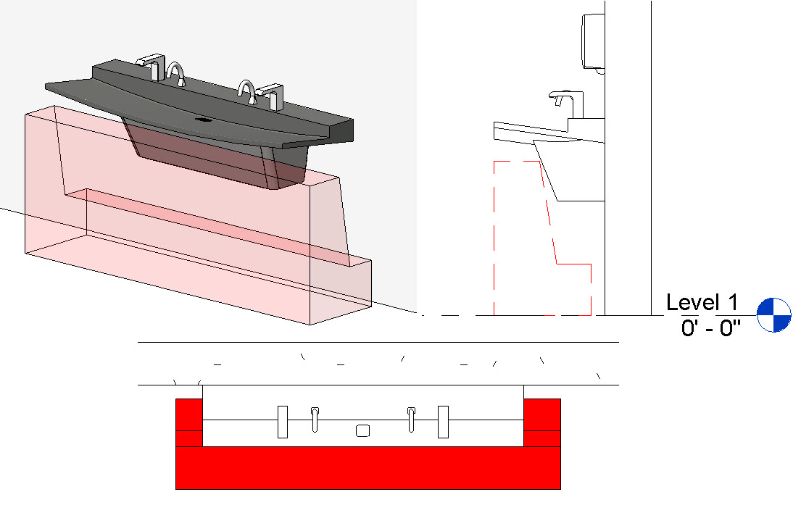

BIM Use: Code Validation

Code Validation
A process in which code validation software is utilized to check the model parameters against project-specific codes.
This process allows teams to check models for code compliance, automation of rule-checking, and verification for other downstream uses such as facility management information requirements.
- Validate that building design is in compliance with specific codes (e.g., IBC, ADA, or Taiwan Building Technical Regulations).
- Code validation done early in design reduces the chance of errors, omissions, or oversights that are expensive to correct later.
- Automated checking gives continuous feedback on code compliance as the design progresses.
- Reduced turnaround time for 3D BIM model review by local code officials.
- Reduced time spent meeting with code commissioners or fixing code violations during the closeout phase.
- Saves time on multiple manual checks, allowing for a more efficient design process.
- Knowledge: Deep understanding of local codes (e.g., Fire Safety, Accessibility).
- Software: Model checking tools (e.g., Solibri, Navisworks with plugins).
- Hardware: Capability for 3D model manipulation and analysis.
- Ability to use BIM authoring tools (Revit) to structure data for validation.
- Ability to define rule sets in validation software (e.g., creating "Rule Sets" in Solibri).
- Experience with code interpretation and application to digital models.